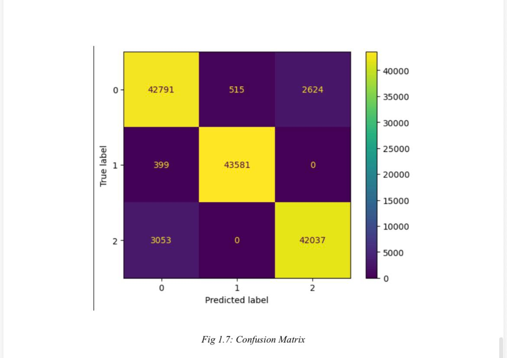
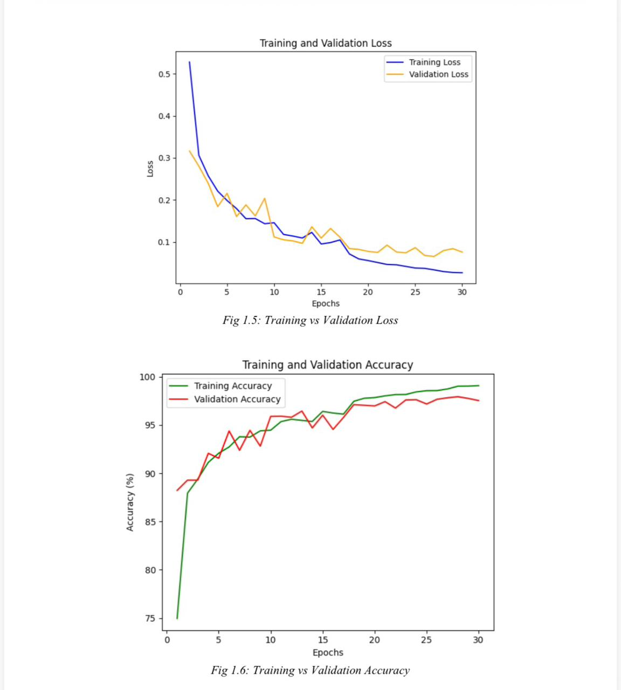

Lung Cancer Prediction using Deep Learning
Problem Statement
Early detection of lung cancer is crucial for patient outcomes. This project aimed to develop an AI model that can accurately predict lung cancer from medical imaging data.
Technical Approach
- Implemented Convolutional Neural Networks (CNNs) for image feature extraction.
- Used Hypergraph Neural Networks to improve feature representation.
- Applied data augmentation techniques to boost robustness.
Technologies Used
Python, TensorFlow, OpenCV, NumPy, Pandas
Results
Achieved over 92.8% accuracy on test datasets, demonstrating strong performance for early cancer detection.
Output Images
1. Confusion Matrix
Confusion matrix for model predictions on the validation set
2. Accuracy and Loss Graphs
Training and validation accuracy/loss curves